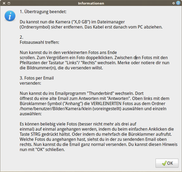

cam2mail Kamerabilder auf PC verschieben und verkleinern
Dieser Artikel wurde für die folgenden Ubuntu-Versionen getestet:
Ubuntu 14.04 Trusty Tahr
Zum Verständnis dieses Artikels sind folgende Seiten hilfreich:
Problembeschreibung¶
Fotos einer Digitalkamera, wie etwa eines Smartphones, sollen möglichst unkompliziert auf einen Computer verschoben (synchronisiert), zusätzlich verkleinert und datensparsam per Email verschickt werden können - daher kommt auch der Name des Skripts. Alle Schritte, die keine Benutzerinteraktion erfordern, werden voll automatisiert, alle anderen werden mit den beiden grafischen Hinweisfenstern begleitet.
Falls man für jemanden den Computer betreut, braucht man bloß selbst noch einmal die Kamera anschließen, den Vorgang abwarten und kann anschließend eine komplette Datensicherung dieses Computers anstoßen, welche ebenfalls alle Bilder enthält. Der Speicher der Kamera ist anschließend für z.B. den nächsten Urlaub wieder komplett leer. Eventuell vorhandene Videos werden einfach mit in den selben Ordner kopiert, aber nicht verkleinert.
So vereinfacht das Skript unbedarften Benutzern das Nutzen von Digitalkameras teilweise erheblich, minimiert den Betreuungsaufwand und es muss auch deutlich weniger erklärt werden. Beziehungsweise kommen die Erklärungstexte als grafisches Fenster, welches auch ausgedruckt neben den PC bzw. die Kamera gelegt werden kann.
Hintergrund¶
Oft stellt sich heraus, dass mit Computern sehr unerfahrene Personen auch mit einfachen Grundlagen Probleme haben, etwa dem Markieren mehrerer Dateien sowie dem Verschieben und Einfügen in einen anderen Ordner. Dennoch nutzt heute fast jeder eine Digitalkamera und sei es nur in Form eines Smartphones. Das Verschieben neuer Fotos auf den Computer kann ohne Hilfestellung überfordern. Dazu kommt das Problem, dass nur neue Bilder verschoben werden sollen (Synchronisation). Man könnte nun bestätigen, dass man alle bereits vorhandenen Bilder nicht noch einmal verschieben möchte - aber verkleinern müsste man sie auch noch - nicht mehr und nicht weniger. Doch bereits die Schritte davor werfen Probleme auf:
Wie schließe ich die Kamera an?
Wie kann ich 300 Bilder auf einmal markieren?
Um für diese Nutzergruppe die Nutzung deutlich zu vereinfachen, ist dieses Skript geschrieben worden. Es kann unter der GPLv2-Lizenz frei benutzt, als Anregung gesehen und verändert werden.
Ein häufiger Anwendungsfall der Nutzung von Digitalfotos ist das Versenden per Email. Deshalb ist das Skript von Grund auf so aufgebaut, dass alle neu übertragenen Bilder zusätzlich in einer verkleinerten Version bereitgestellt werden. Dies spart Übertragungsvolumen, Sende- und Empfangszeit sowie Speicher beim Empfänger. Im Anschluss erfolgt ein grafisches Dialogfenster, welches die Schritte beschreibt, wie man die Bilder in drei Schritten an eine Email anhängt - konkret am Beispiel vom Standard-Emailprogramm Thunderbird unter (X/L)Ubuntu (GNOME/ MATE).
Man kann die Texte im Skript mit etwas Sorgfalt natürlich an seine eigenen Bedürfnisse anpassen bzw. kürzen - oder den zukünftigen Nutzer darauf hinweisen, dass bestimmte Hinweise ignoriert werden können. Zum Beispiel könnte man in Zeile 95 X,0 GB mit der tatsächlichen Speichergröße des Kameraspeichers anpassen, damit sie leichter im Dateimanager gefunden werden kann, z.B. als "Datenträger 8,0 GB". Mit einigen grundlegenden Shell-Kenntnissen kann man auch Funktionen weglassen, ändern oder hinzufügen. Dabei sind jedoch die Hinweise unter Bedienung sowie Probleme und Einschränkungen zwingend zu beachten.
So sieht das Skript aus - es enthält vor allem in Englisch weitere Kommentare und Hinweise für Entwickler, die wichtigen für Anwender aber kurz in Deutsch und ausführlich hier Artikel:
1 2 3 4 5 6 7 8 9 10 11 12 13 14 15 16 17 18 19 20 21 22 23 24 25 26 27 28 29 30 31 32 33 34 35 36 37 38 39 40 41 42 43 44 45 46 47 48 49 50 51 52 53 54 55 56 57 58 59 60 61 62 63 64 65 66 67 68 69 70 71 72 73 74 75 76 77 78 79 80 81 82 83 84 85 86 87 88 89 90 91 92 93 94 95 96 97 98 99 100 101 | #!/bin/bash # Linux/ tested on Ubuntu Linux # cam2mail - move (not copy!) all files from cam and scale size down (with zenity dialog in German language/ de) # DEUTSCH: verschiebe (nicht kopiere!) alles von Cam/Handy und verkleinere Bilder (in ~/bin/cam2mail abspeichern, # per Rechtsklick ausführbar machen, in Autostart aufrufen, imagemagick und zenity installieren, in Zeile 33 # "# Settings and folders:" Ordner etc. anpassen) # Author: Benno-007 # Email: linuxgehtned@habmalnefrage.de # LICENCE: GPLv2 # This program is free software; you can redistribute it and/or modify it # under the terms of the GNU General Public License as published by the Free # Software Foundation; only GPLv2. This program is distributed in the hope that it will be useful, # but WITHOUT ANY WARRANTY; without even the implied warranty of MERCHANTABILITY # or FITNESS FOR A PARTICULAR PURPOSE. See the GNU General Public License for more # details. You should have received a copy of the GNU General Public License along # with this program; if not, see <http://www.gnu.org/licenses/>. # must be executable and should run in autostart from user # extra requirements: imagemagick zenity # suggestions: nautilus # good script and rsync log location (within $PATH): ~/bin/cam2mail log="$HOME/bin/cam2mail" ### Info: pics on cam will be deleted on cam when successfull transmitted to PC: ### deleted pics on cam: check numbers of cam pictures when deleting one and shoot a new foto to fill out this number gap! ### otherwise this old number pic can be lost while next sync! ### deleted pics on PC: will be re-rsync-ed -> that means: after the sync delete all pics on cam before deletion of a pic on ### PC or they will come back from cam # Settings and folders: cam="/media/A1B2-C3D4/DCIM/100CASIO" source="$HOME/Bilder/Kamera/gross" dest="$HOME/Bilder/Kamera/klein" tmp="$HOME/Bilder/Kamera/tmp" # temporärer Ordner zum Verkleinern scale="30%" quality="75" # First time tasks: if [ ! -d "$log" ]; then mkdir -p "$log" fi if [ ! -d "$source" ]; then mkdir -p "$source" fi if [ ! -d "$dest" ]; then mkdir -p "$dest" fi if [ ! -d "$tmp" ]; then mkdir -p "$tmp" fi # for autodetection of cam: # Autostart with integrated cam check within script -> /home/USERNAME/bin/cam2mail/cam2mail while true; do # main program if cam is plugged in if [ -d "$cam" ]; then if zenity --question --text="Fotos (und Videos) werden kopiert und verkleinert und anschließend auf der Kamera ALLE FOTOS und Videos automatisch ohne weitere Nachfrage GELÖSCHT! Der Vorgang kann mehrere Minuten dauern und ist erst beendet, wenn ein neues Informationsfenster erscheint. Bitte jetzt mit "Ja" bestätigen und ABWARTEN..."; then mv "$log"/rsync.log "$log"/rsync.log.old 2>/dev/null mv "$log"/rsync2.log "$log"/rsync2.log.old 2>/dev/null if rsync --stats -PSvahHAXx --log-file="$log"/rsync.log --compare-dest="$source"/ "$cam"/ "$tmp"; then rsyncerror="$?" fi echo Minification... echo Please wait... if [ $(find "$tmp" -iname '*.jpg' | wc -l) -gt "0" ]; then cd "$tmp" # type jpg or JPG file format end available on your cam! for i in *.{JPG,jpg}; do convert "$i" -scale "$scale" -quality "$quality" "$dest"/"$i" done echo "Copying original of new minified pictures from temporay location to destination (error is normal if there are no new pictures to sync and shrink)..." fi if rsync --stats -PSvahHAXx --log-file="$log"/rsync2.log --remove-source-files "$tmp"/ "$source" 1>/dev/null; then # delete camera only if every data rsync here and above is without error; check that "$cam" is set and is not "/" to prevent # unwanted deletions of system folders "/*" or "//*"; input "//" (transformed to "///*" is not prevented but normally not # used and would only delete SOME files likes kernels in "/" but ONLY if you run the script as root what IS NOT RECOMMENDED! if [ "$rsyncerror" == "0" ]; then if [ "$cam" != "" ]; then if [ "$cam" != "/" ]; then rm "$cam"/* fi fi fi fi rmdir "$tmp" nautilus "$dest" zenity --no-wrap --info --text="$(echo "1. Übertragung beendet:\n\nDu kannst nun die Kamera (\"X,0 GB\") im Dateimanager (Ordnersymbol) sicher entfernen. Das Kabel erst danach vom PC abziehen.\n\n2. Fotoauswahl treffen:\n\nNun kannst du in den verkleinerten Fotos ans Ende scrollen. Zum Vergrößern ein Foto doppelklicken. Zwischen den Fotos mit den Pfeiltasten der Tastatur \"Links\"/ \"Rechts\" wechseln. Merke oder notiere dir nun die Bildnummer(n), die du versenden willst.\n\n3. Fotos per Email versenden:\n\nNun kannst du ins Emailprogramm \"Thunderbird\" wechseln. Dort öffnest du eine alte Email zum Antworten mit \"Antworten\". Oben links mit dem Büroklammer-Symbol (\"Anhang\") die VERKLEINERTEN Fotos aus dem Ordner "$dest" (voreingestellt) auswählen und einzeln auswählen:\n\nEs können beliebig viele Fotos (besser nicht mehr als drei auf einmal) auf einmal angehangen werden, indem du beim einfachen Anklicken die Taste STRG gedrückt hältst. Oder indem du mehrfach die Büroklammer aufrufst. Welche Fotos du angehangen hast, siehst du in der zu sendenden Email oben rechts. Nun kannst du die Email ganz normal versenden. Du kannst diesen Hinweis nun mit \"OK\" schließen." | fold -s)" fi # leave after first sync, do not repeat sync while Autostart session exit 0 fi sleep 3 done |
Installation¶
Das Skript verwendet ImageMagick zur Verkleinerung der Bilder sowie Zenity für die Dialoge. Beide Pakete müssen ggf. nachinstalliert[1] werden[2]:
imagemagick
zenity
 mit apturl
mit apturl
Paketliste zum Kopieren:
sudo apt-get install imagemagick zenity
sudo aptitude install imagemagick zenity
Nun legt man einen Unterordner bin sowie bin/cam2mail in seinem Homeverzeichnis an, speichert das Skript dort in einer gleichnamigen Textdatei cam2mail und macht das Skript danach per Rechtsklick ausführbar[3]. Wer diese Schritte bequem über allgemeingültige Terminal-Befehle erledigen möchte, kann dazu folgende Befehle verwenden:
Verzeichnis bin/cam2mail im eigenen Homeverzeichnis wird angelegt:
mkdir -p ~/bin/cam2mail
Skript markieren, kopieren und in einem Editor einfügen und als Datei cam2mail abspeichern[4].
Das Skript ausführbar machen:
chmod u+x ~/bin/cam2mail/cam2mail
Anschließend müssen noch die Angaben Settings and folders für die Einstellungen der gewünschten Verkleinerungsqualität, dem Ordner der Kamera und dem Zielordner in Zeile 34-39 angepasst werden. Die Qualität sollte wegen der Dateigröße 75-95 nicht übersteigen, zur Verkleinerung ist standardmäßig 30% eingestellt, was bei den meisten großen Bildern der heutigen Kameras für eine Email mehr als ausreicht und dennoch übergroße Dateianhänge oder unerwünschtes horizontales Scrollen beim Empfänger minimiert.
Die Ordner sollten nicht freigelassen werden, um unbeabsichtigte Programmierfehler zu vermeiden, auch wenn für den gröbsten Fehler ein Sicherungsmechanismus gegen versehentliches Löschen eingebaut ist. Den genauen Ordner der Kamera erfährt man, indem man diese ansteckt und anschließend unter[2]
mount
in der letzten Zeile nachsieht - oder einfach im Dateimanager. Die anderen Ordner sind für die großen, die kleinen sowie temporär gespeicherte Bilder (kurzzeitig für die Verkleinerung) und müssen existieren. Sie werden bei Erstbenutzung des Skriptes automatisch angelegt.
Anschließend werden die Bilder bei Bestätigung der Nachfrage automatisch synchronisiert, zusätzlich verkleinert (dies muss ein anderer Ordner sein, sonst werden die Originale verkleinert) sowie auf der Kamera gelöscht. Dieses Vorgehen soll nicht ohne weitere Überlegungen geändert werden, wie unter Probleme und Einschränkungen erläutert wird.
Bedienung¶
Man steckt zuvor die Kamera an. Das Programm kann anschließend über das Terminal gestartet und getestet[2] werden:
~/bin/cam2mail/cam2mail
Das Programm startet und führt mit wenigen Dialogschritten durch den Vorgang. Es ist zu beachten, dass während den Kopier-, Verkleinerungs- und Löschvorgängen einige Minuten vergehen könnten, in welche noch keine neue Meldung vom Skript kommt. Diese Zeit muss abgewartet werden und hängt von der Menge, Größe und Verkleinerungsstufe der Bilder ab.
|  |
| cam2mail: Dialogfenster |
Funktioniert es ordnungsgemäß, kann man es als
/home/BENUTZERNAME/bin/cam2mail/cam2mail
in den Autostart eintragen, wobei der eigene BENUTZERNAME des eigenen Homeverzeichnisses einzutragen ist. Es wird im Skript in Zeile 100 dann endlos alle 3 Sekunden geprüft, ob die Kamera angesteckt wurde - eleganter könnte man das natürlich mit udev regeln, aber es gibt auch Vorteile solcher einfacher Lösungen, die sich zudem im Homeverzeichnis mit sichern lassen. Man steckt nun die Kamera an, das Programm startet automatisch durch den Autostart und führt mit wenigen Dialogschritten durch den Vorgang.
Eingetragen sind die Unterstützung für die Bilder-Dateiendungen JPG sowie jpg, ansonsten muss man dies in Zeile 76 anpassen. Dann sind allerdings eventuell weitere Anpassungen nötig, falls die Verkleinerung nicht direkt klappt. Die meisten Kameras und Smartphones speichern als jpg-Dateien ab.
Wenn man nun den PC neugestartet (oder schneller: neu eingeloggt) hat und der Autostart damit aktiv wurde, kann man das Programm nochmals testen. Zuvor sollte man ein neues Testfoto geschossen haben, was übertragen, verkleinert und gelöscht werden soll.
Nach Beendigung des Verschiebe-Vorgangs wird der im Skript in Zeile 94 voreingestellte Dateimanager Nautilus zum Öffnen des Ordners der verkleinerten Bilder gestartet - dort kann entsprechend auch ein anderer eingetragen werden, muss aber nicht.
Zusätzlich kann man zum Beispiel unter Ubuntu im Standard-Dateimanager Nautilus ausschließlich den Ordner der Bilder (bei 14.04: Einstellung gespeichert für alle Ordner) mit den Tastenkombinationen Strg + 2 in die Vorschauansicht bringen sowie mit mehrfachem Strg + + soweit vergrößern wie gewünscht, damit nicht auch noch ein weiteres Fenster mit einem weiteren Programm (Bildbetrachter oder Bildverarbeitung) erklärt werden muss, solange man die Bilder nur verwalten möchte und nur als einfach zu benutzende Vorschau braucht.
Ein Doppelklick öffnet ohnehin die große Ansicht in einem externen Bildbetrachter und danach kann man meist die Pfeiltasten oder die Leertaste zum Weiterblättern verwenden. Mit "X" im Fenstertitel schließt man ein Fenster, muss man für die Zielgruppe ggf. auch noch erklären. Es bietet sich auch an, den Ordner für die kleinen Bilder im Emailprogramm bereits voreinzustellen, was eine erhebliche Erleichterung für die weniger mit Ordnerkonzepten vertraute Zielgruppe darstellt.
Wenn die Kamera nicht mehr erkannt wird, ist zu prüfen, ob der PC - wie für eine erneute Erkennung nach dem Abziehen erforderlich - neugestartet wurde (keine Bereitschaft oder Ruhezustand) oder ob der Ordner der Kamera sich verändert haben könnte. Dies liegt daran, dass das Skript nach dem ersten Synchronisationsvorgang beendet wird und damit der Autostart bis zum Neustart nicht mehr wirksam ist. Das ist der Nachteil der Autostart-Variante, jedoch einfacher als eine udev-Regel und leicht zu sichern.
Wie im Folgenden erklärt wird, sollte man bei Verwendung des Skriptes zur Rücksichtnahme auf die Synchronisation auch einzelne Bilder stets nur auf dem Computer und nicht auf der Kamera löschen.
Probleme und Einschränkungen¶
Das Skript ist wie beschrieben auf einen ganz konkreten und eigentlich privaten Zweck zugeschnitten und wird freigegeben, wie es ist. Voraussetzung ist, dass die Kamera einen USB-Massenspeicher-Modus anbietet, damit man einen dazugehörigen Kameraordner mit den Fotos eintragen kann. Der Name des Verzeichnispfades (mit Mountpoint) basiert meist auf einer UUID oder einem Label - da sich diese beim Formatieren ändern, darf man in dieser Konfiguration also nicht ohne Änderung des Ordnernamens im Skript die Speicherkarte formatieren (bei vielen Modellen auch nicht alle Bilder löschen) oder gar wechseln. Es wird vom einfachen Benutzer mit der immer gleichen Speicherkarte ausgegangen.
Des Weiteren soll dem unbedarften Benutzer auch diese Arbeit und Aufmerksamkeit für das manuelle Löschen der Bilder abgenommen werden, indem bereits übertragene Bilder automatisch von der Kamera gelöscht werden.
Das ist auch dafür wichtig, damit die dadurch freiwerdenden Durchnummerierungen der Bilder von den meisten Kameras sonst noch einmal verwendet und entsprechend beim nächsten Benutzen des Programmes noch einmal kopiert würden, was die alten Bilder mit der ehemals selben Nummer überschreiben und damit unwiederbringlich löschen würde. Wem diese Erklärung zu kompliziert war: Kein Bild geht verloren, wenn man einzelne Bilder immer nur auf dem Computer löscht anstatt auf der Kamera. Dies sollte man dem zukünftigen Benutzer noch mit auf den Weg geben.
Alle Synchronisationsvorgänge mit rsync werden abwechselnd in den selben vier Logdateien rsync[2].log[.old] im standardmäßigen Ordner des Skriptes ~/bin/cam2mail protokolliert, welcher sich in Zeile 26 anpassen lässt - man sollte also bei Fragen und Problemen zunächst dort nachsehen und im Problemfall diese Dateien auf jeden Fall an einen zweiten sicheren Ort kopieren, bevor man sie mit weiteren Versuchen neu überschreiben lässt. Damit stellt man sicher, dass man im Nachhinein noch auswerten kann, welche Aktionen wann wie mit welchen Bildern durchgeführt wurden. Weitere Spezialvorgänge oder Sonderfälle werden von dem Skript nicht abgedeckt.
Für diesen konkreten Einsatzzweck funktioniert es hervorragend. Jede kleinere Abweichung vom deklarierten Programmiercode oder erheblich vom Bedienzweck kann Nebenwirkungen wie Verlust der Bilder oder gar anderer Daten zur Folge haben. Das Skript sollte aus Sicherheitsgründen daher nicht mit sudo-Rechten ausgeführt werden, wie jedes andere Benutzerskript auch. Hält man sich an diese Hinweise und benutzt es, wie es ist, funktioniert es einfach, zuverlässig und sicher wie gewünscht - wie jedes andere gewöhnliche Programm auch.

- Erstellt mit Inyoka
-
 2004 – 2017 ubuntuusers.de • Einige Rechte vorbehalten
2004 – 2017 ubuntuusers.de • Einige Rechte vorbehalten
Lizenz • Kontakt • Datenschutz • Impressum • Serverstatus -
Serverhousing gespendet von